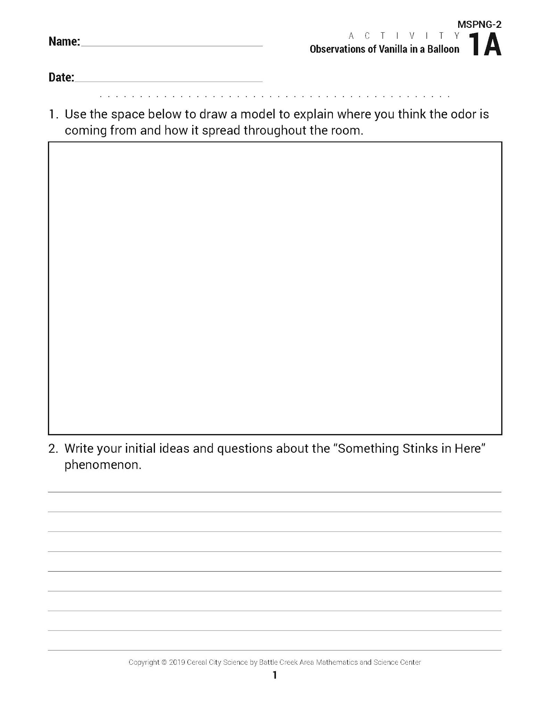
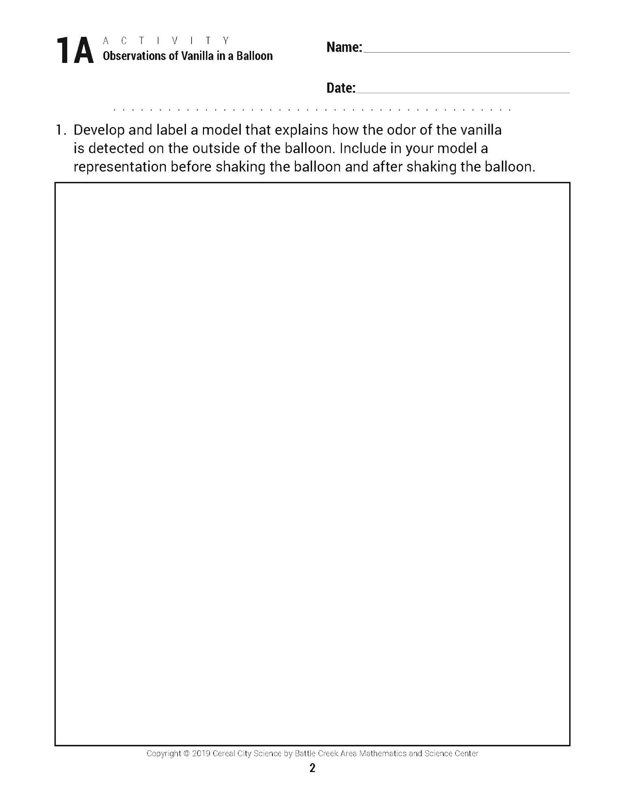
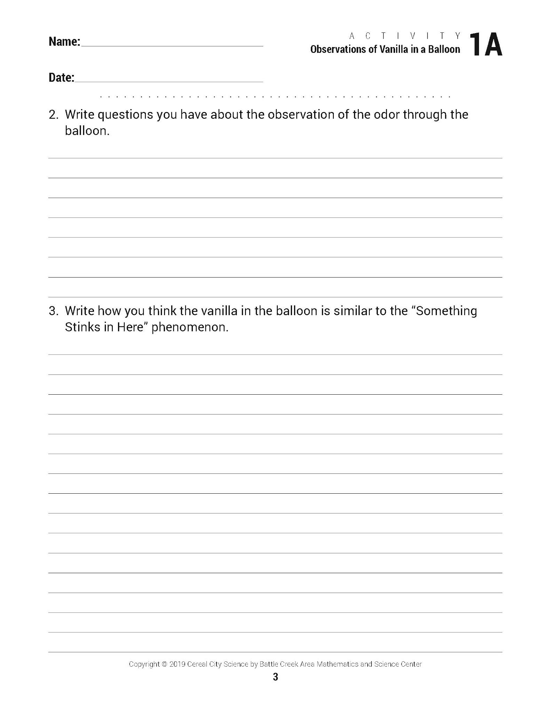

1. Use the space below to draw a model to explain where you think the odor is coming from and how it spread throughout the room.
2. Write your initial ideas and questions about the “Something Stinks in Here” phenomenon.
Student journal pages 1–3 • Select a page below to read its editable text.
1. Use the space below to draw a model to explain where you think the odor is coming from and how it spread throughout the room.
2. Write your initial ideas and questions about the “Something Stinks in Here” phenomenon.
This is the unmarked scanned page for checking original diagrams, exact wording, or layout. The editable HTML content is above.

1. Develop and label a model that explains how the odor of the vanilla is detected on the outside of the balloon. Include in your model a representation before shaking the balloon and after shaking the balloon.
This is the unmarked scanned page for checking original diagrams, exact wording, or layout. The editable HTML content is above.

2. Write questions you have about the observation of the odor through the balloon.
3. Write how you think the vanilla in the balloon is similar to the “Something Stinks in Here” phenomenon.
This is the unmarked scanned page for checking original diagrams, exact wording, or layout. The editable HTML content is above.
